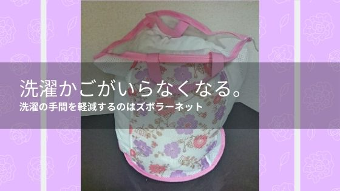

洗濯かごがいらなくなる。洗濯の手間を軽減するのはズボラーネット
洗濯機から取り出した洗濯ものをそのまま運べるネットです。
洗濯って体力使うので疲れますよね。
特に水が染み込んで重くなってしまった服を洗濯かごに移して、運んで、干す。
この一連の動作がしんどかったのですが楽になる便利グッズを見つけてしまいました。
それがズボラーネットです。
これは洗濯ネット、洗濯かご、ランドリーバックの機能が１つになった便利商品です。
まだ使い始めたばかりなのですが、いい感じに楽できてよかったです。
今回はこのズボラーネットを使ってみた感想とレビューを書きたいと思います。
使い勝手はどんな感じ？
バックの形をしており中に洗濯ものをいれてそのまま洗濯することができます。
上部にはチャックが付いており中身が飛び出さないようになっています。
サイズは小・大・特大があり大を使っていますが、シャツ５枚くらいでいっぱいになってしまうので、１回の洗濯量にもよりますが特大を購入すればよかったかなと思っています。
使ってみた感想ですが、ひと手間なくなるだけで洗濯に対する憂鬱感が減りました。
肉体的に楽なのはもちろんなのですが、面倒くさいという気持ちが減るため心も楽になったのは良かったです。
肉体的に特に楽だったのは洗濯機から洗濯物を取り出す作業がなくなったところです。
底の服を取るのがどうしても体勢的にしんどい体勢になっていたのですが、ズボラーネットを使えばネット１回を取り出すだけで終わったので助かりました。
使っている私からのアドバイスが１つありまして、ベランダなど干す場所にこのズボラーネットを掛けられる場所を用意しておいたほうが良いです。
洗濯かごと違いこのネットは一緒に洗濯しているため濡れています。
そのため地面に置くことができず、腕にかけたまま洗濯物を干すことになります。
重い洗濯物を腕にかけ続けるのはつらいですし、濡れているのもいやですよね。
なので持ち手を片側だけ掛けて両手を開けて作業すればさらに楽になります。
気になるところは？
やっぱり一番は一度に使える量があまり多くないというところです。
なので購入を考えられている方は特大サイズをおすすめします。
次に気になったのはほかの方のレビューで、汚れが落ちなかったという意見もありました。
汚れが落ちなかったらいやだったのですが、私は今のところ問題なく汚れは落とせているので今のところは満足です。
まとめ
買ってよかったと思える洗濯グッズでした。
使い勝手がよく、洗濯の負担が減って助かっています。
ただ、後悔していることは特大サイズにすればよかったことです。
気になった方はぜひ使ってみてください。
洗濯に関連する記事

家事の便利グッズまとめ